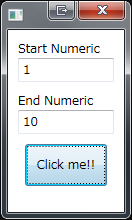
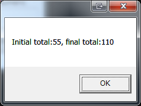

前回は簡単な関数を呼び出してみました。
Introduction
今回の目的は、引数を渡し、その戻りを表示します。 ただ、単純に文字列や数値を渡すのは面白くありません。 今回は配列を渡して、配列を返します。 なんと言っても、Pythonは配列、リスト、タップルの操作を得意としており、またそれらを操作するライブラリが豊富です。 すなわち、配列をPythonで処理させ、その結果をC#で受け取ることができれば、より実践的なアプリが作成できます。 今回は、2つの数値を指定し、その数値を数列の先頭、末尾として扱い、差が1の階差数列を生成します。 その階差数列をPythonに渡し、各要素を2倍にした配列をC#に返し、最終的に配列内の要素の総和を返すアプリです。 例えば、1、10を指定すれば、1,2,…9,10が生成され、最終的な値は55*2の110と表示されます。 今回のソースは下記になります

Python側
Python側のプロジェクトを作成します。 Pythonのソースは下記になります。 [code lang=”python”] class PythonTest(): def twice(selt, array): list = [0 for i in range(len(array))] i = 0 for x in array: list[i] = x * 2 i += 1 return list; [/code] Pythonの文法をかなり忘れているので、ググりながら作成しました。情けない。 まず、list変数は、引数に渡ってきた配列arrayの長さの個数を持ち、かつ各要素は0で初期化されます。 次に、渡ってきた配列arrayをループで各要素、つまりxにアクセス、そのxを2倍にし、先頭から順にlistに格納します。 そして、listを返します。
C#側
今回もWPFです。Xaml側は省略します。 数列の開始数値と終了数値を入力できるTextBox、結果を表示するメッセージボックスを表示するボタンだけです。 IronPythonの参照方法、Microsoft.Scripting.Hosting.ScriptRuntime 型、IronPython.Hosting.Python.CreateRuntime メソッド、UseFile メソッドの説明は前回の記事を参照してください。 今回は、Pythonと配列をやりとりする箇所のみ説明します。 [code lang=”csharp”] public RelayCommand MessageCommand { get { return this._MessageCommand ?? new RelayCommand(() => { var array = Enumerable.Range(this._Start, this._End - this._Start + 1).ToArray(); var sum = array.Sum(); var list = this._PythonWrapper.Twice(array);
var message = $”Initial total:{sum}, final total:{list.Sum()}”; this._MessageDialog.ShowMessage(message); }); } } [/code] _PythonWrapper.Twiceが今回、Pythonスクリプトの関数を呼び出します。 arrayはint[]です。 そしてlistもint[]です。 では、PythonWrapperの中身です。 [code lang=”csharp”] using System; using System.Collections; using System.Collections.Generic; using System.IO; using System.Linq; using Microsoft.Scripting.Hosting; using WPFPython2.ViewModels.Interfaces;
namespace WPFPython2.ViewModels {
public sealed class PythonWrapper : IPythonWrapper {
#region フィールド
private readonly ScriptRuntime _ScriptRuntime;
private dynamic _PythonObject;
private dynamic _PythonTest;
private readonly string _Path;
#endregion
#region コンストラクタ
public PythonWrapper(ScriptRuntime scriptRuntime, string path) { if (scriptRuntime == null) throw new ArgumentNullException(nameof(scriptRuntime)); if (path == null) throw new ArgumentNullException(nameof(path));
if (!File.Exists(path)) throw new FileNotFoundException(path);
this._ScriptRuntime = scriptRuntime; this._Path = path; this._PythonObject = this._ScriptRuntime.UseFile(this._Path); this._PythonTest = this._PythonObject.PythonTest(); }
#endregion
#region メソッド
public int[] Twice(int[] array) { var list = this._PythonTest.twice(array); return ((IList
テスト
実際に実行してみます。 サンプルソースをビルドすると実行ディレクトリに、pythonsフォルダが生成され、Python2.pyファイルがコピーされます。 このファイルはPythonプロジェクトのファイルそのものです。 実行するとButtonが1つとTextBoxが2つ。。

{kind=link}
ボタンを押すと、Python2.pyのtwiceの戻りの内容の総和が表示されます。

{kind=link}
アプリを終了し、Python2.pyのtwice関数内の、2倍の部分を3に変更したりすれば、今回も内容が変わることがわかります。
Conclusion
今回も簡単に実行できました。 異なる言語間のやりとりで面倒なことの筆頭は配列の扱いだと思います。例えば、C#とC/C++におけるポインタとか。 しかし、そんな面倒なところを感じさせないところは、Pythonがグルー言語と言われるところでしょう。
Source Code
https://github.com/takuya-takeuchi/Demo/tree/master/WPF.Python2